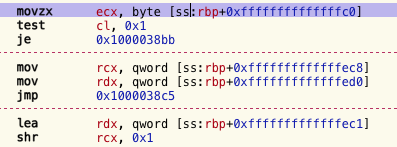
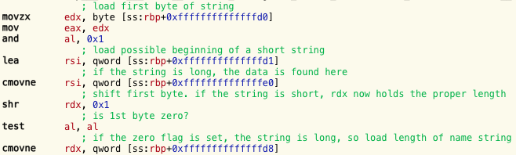
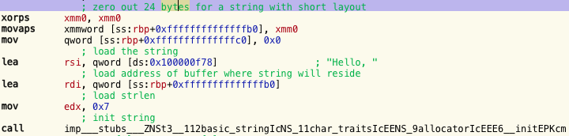
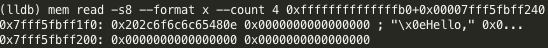
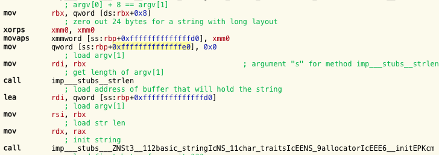
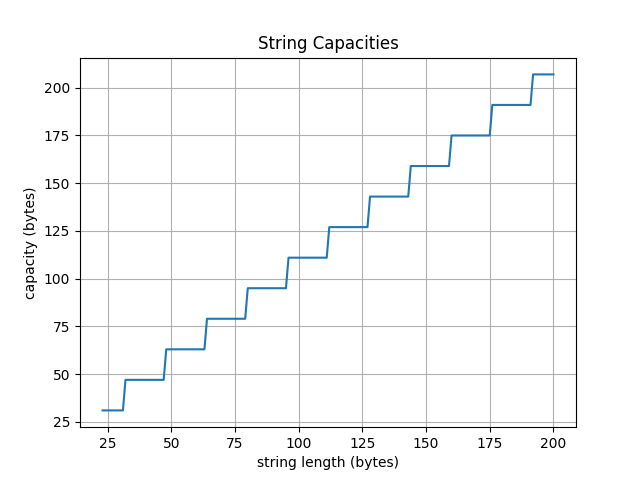

Introduction
While working on a reverse engineering project (a malware sample written in Objective-C++), I noticed a certain motif which always appeared whenever the program was dealing with C++'s std::string objects. The motif can be seen below.

Determined to fully understand what was going on, I knew I needed to see what a std::string looks like in memory. This prompted me to dig into the internals of libc++ (the C++ standard libraries for the llvm project). Suprisingly, I came up from the depths alive - this is my story.
A Tale of Two Layouts
The first thing I did is write a small example program that takes two strings and appends them together, printing the result. The disassembly displays something similar to the program above

This at least meant I was on the right track; the pattern is related to std::strings, and not something else.
At this point, I decided to look into the clang's libc++ source code and find out how strings are defined. The string definition is found in include/string. This is a giant file full of template stuff that I didn't fully understand but no matter, searching for "layout" gave me some results. It didn't take long to find that there are different kinds of string layouts.
There are three types of layouts (but only two are important for my purpose): long, short, & raw.
Technically, there are two alternative definitions of the long and short layouts, which depend on whether or not
_LIBCPP_ABI_ALTERNATE_STRING_LAYOUT was defined at compile time.
As you might guess, raw is a C-style char buffer.
The long string layout goes like this:
struct __long {
size_type __cap_;
size_type __size_;
pointer __data_;
};
struct __short { union { unsigned char __size_; value_type __lx; }; value_type __data_[__min_cap]; };
typedef typename __alloc_traits::size_type size_type;
and
typedef _CharT value_type;
This is yet another layer of indirection. Strings are created from a template, basic_string, and require three template parameters:
class _CharT, class _Traits, class _Allocator.
In my particular case, I was dealing with strings whose _CharT was equal to char, whose _Traits were equal to std::__1::char_traits<char>, and whose _Allocator was equal to std::__1::allocator<char>.
This meant value_type is a char (1 byte), size_type is uint64, and pointer is uint64. As for __min_cap, this is defined as
enum {__min_cap = (sizeof(__long) - 1)/sizeof(value_type) > 2 ? (sizeof(__long) - 1)/sizeof(value_type) : 2};
sizeof(__long) == 24 bytes.Given these values, we can now calculate __min_cap, which in my case equals 23.
Hence,
sizeof(__short) == 24 bytes
Building Strings
Returning to the disassembly, I looked at what string greeting("Hello, "); compiled down to.

I wondered why the xmm register was showing up here. This is a compiler optimization. On my architecture, the xmm registers hold 128 bits, or 16 bytes.
First 128 bits are zeroed out, followed by zeroing out the contents of a quadword. This means it's zeroing out 24 adjacent bytes -- just enough for our string. This is another motif that apparently appears with C++ strings, at least with compiler optimizations turned up.
At this point, I started up lldb and dumped the memory holding the "Hello, " string.

Notice that the most significant byte is 0x0E. This confused me, I thought it was supposed to be the string's size, but it's not 14 characters long, it's 7.
Jumping back to the libc++ source, I looked at how strings are initialized.
When creating a short string (i.e. a string whose length is less than __min_cap == 23 bytes), a call is made to a function called __set_short_size. On a little-endian CPU, this function looks like:
void __set_short_size(size_type __s) _NOEXCEPT {__r_.first().__s.__size_ = (unsigned char)(__s << 1);}
Indeed, 0x0E = 0x07 >> 1. Looks like I'm on to something!
Now let's see how a long string is set up. In this example, the string is obtained as the first program argument, i.e. argv[1]

It clears 24 bytes for the string in the same manner as it did for the first string. This time, since the string's length isn't known at compile-time, a call to strlen is made.
This isn't so different from how the short string was setup.
The capacity of long strings are stored in a special way. When setting the capacity, a call is made to __set_long_cap, defined like so:
void __set_long_cap(size_type __s) _NOEXCEPT {__r_.first().__l.__cap_ = __long_mask | __s;}
Determining Layout
Now that the strings are created, it's time to append the user-supplied string to "Hello, ". In the picture below we can see, first, how a string's layout is determined, and how the data is loaded into the registers.
Here, the user-supplied string rests on the stack in the 24 byte span from [ss:rbp+0xffffffffffffffd0] to [ss:rbp+0xffffffffffffffe8]. The compiler doesn't know what layout was chosen, so it must be determined at runtime. It's apparent from the disassembly that this is achieved through bitmasking the string's first byte with 0x01, followed by a test. If the zero flag is 1, it's a short string, if it's 0, it's long. Going back to the disassembly I showed in the introduction, we can now properly interpret what's going on.
This way of determining the string's layout raises another question: can the first byte of a long string's capacity ever set the zero flag to 0 after a bitwise-and/test instruction? Put another way, can the first byte of a long string's capacity be an even number? If that were the case, the program would accidently read a long string as a short one. To figure this out, I crawled through the string class' source code again, this time looking at how long string capacities are determined and assigned.
Calculating Capacity
If a string whose size is greater than or equal to __min_capacity (23) is given, then the string's __init function sets the capacity like so:
size_type __cap = __recommend(__reserve);
This recommend function is defined as
size_type __recommend(size_type __s) _NOEXCEPT
{return (__s < __min_cap ? static_cast<size_type>;(__min_cap) :
__align_it<sizeof(value_type) < __alignment ?
__alignment/sizeof(value_type) : 1 > (__s+1)) - 1;}
template <size_type __a>; static _LIBCPP_INLINE_VISIBILITY size_type __align_it(size_type __s) _NOEXCEPT {return (__s + (__a-1)) & ~(__a-1);} enum {__alignment = 16};
I created a program that calculates the recommended capacity, given a string length, and plotted the values.

The __recommend function operates on values from 23 onward. From [23, 31] its value is 31, and it's constant on every interval [32+16*n, 31+16*(n+1)] with value 47+16*n, where n>=0.
Put more simply, __recommend(x) = y-1 where y is x rounded up to the nearest multiple of 16.
Wrapping Up
My goal was to understand the pattern of assembly code shown below:
As demonstrated above, it's checking the layout, followed by loading the string's data and size from the appropriate locations. I had a lot of fun diving into libc++ and gaining a better understanding of what's going on with C++ strings, and reversing C++ programs more generally.
If you have any comments/corrections, you can email me or contact me on Twitter @eu90h.
Thanks for reading!